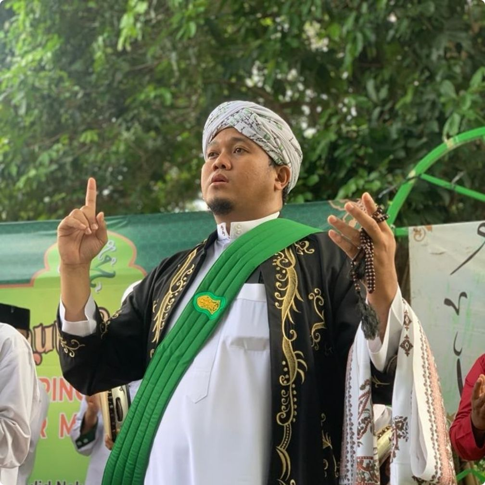
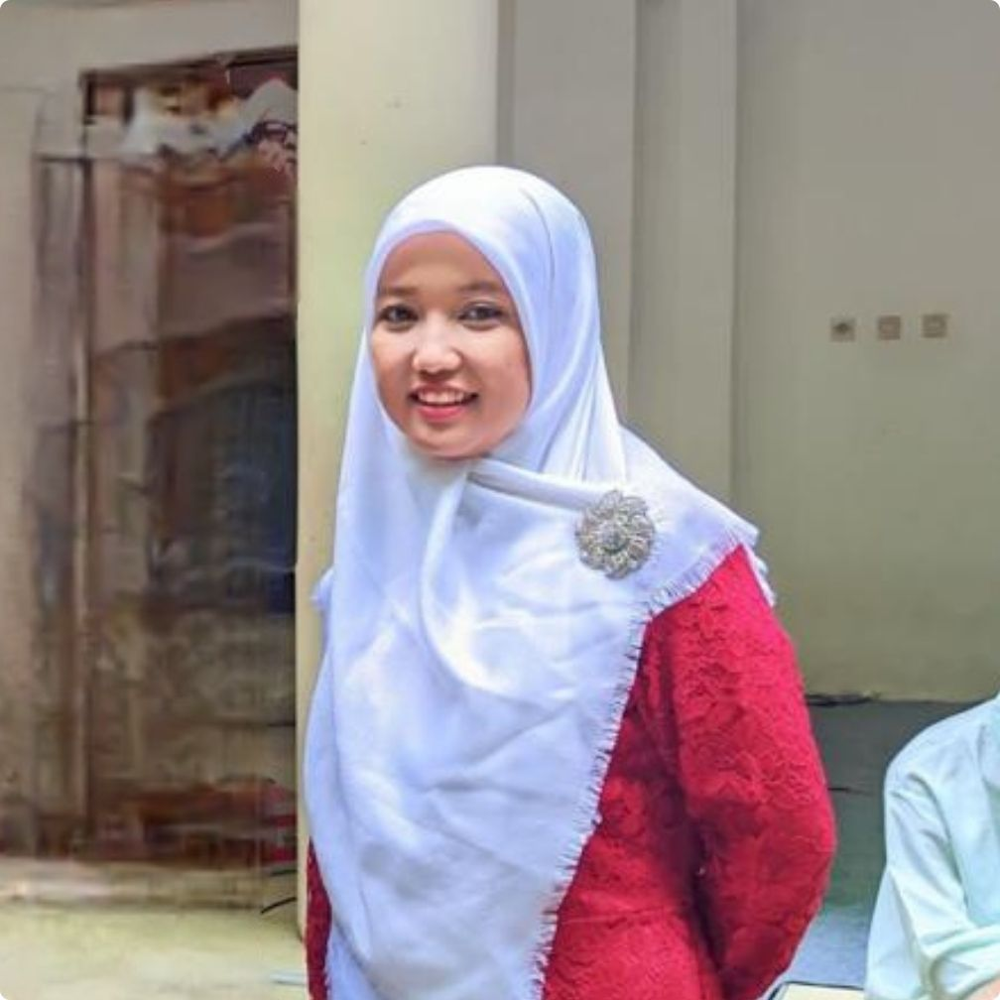
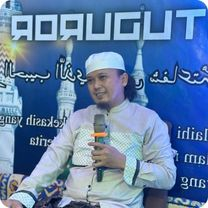
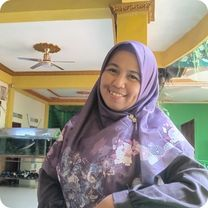

Struktur Kepengurusan
Pimpinan dan pengelola Pondok Pesantren Yatim Al-Hanif

KH Ahmad Jazuli
Pimpinan PonPes Yatim Al-Hanif

Ustzh Mailan S,E.
Bendahara PonPes Yatim Al-Hanif

Ust Abdul Gofur S,Pd,I.
Kepala Madrasah Tsanawiyah

Ustzh Zulfana S,Si.
Kepala Madrasah Aliyah
Alur Pendaftaran Santri
Proses Pendaftaran Pondok Pesantren Yatim Al-Hanif
Isi Formulir
Calon santri mengisi formulir pendaftaran secara online & offline.
Verifikasi Data
Data akan diverifikasi oleh admin pondok.
Dihubungi Admin
Admin akan menghubungi melalui WhatsApp.